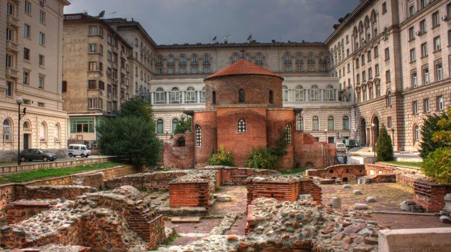

Плюсы и минусы бизнеса в Болгарии
Как и любом деле есть свои плюсы и минусы. Все протекает здесь медленно и сонно. Никто никуда не спешит. Все друг с другом по долгу и с удовольствием общаются в позитивной манере. Трудно вначале избавится от нашей манеры вести дела «на лету». У болгар, например, неучтиво быстро прощаться. Надо обязательно пожелать приятного вечера или легкой работы даже продавцу, которого видишь в первый и скорее всего в последний раз.
Главным достоинством надо отметить безопасность. Гулять здесь ночью по улице не страшно. Большим плюсом здесь является отсутствие давления со стороны гос. структур. Сразу чувствуется отличие от стран СНГ. Не создаются лишние проблемы. В этой связи экономится большое количество нервов, времени и ресурсов. Здесь все совершенно прозрачно. Подоходный налог здесь самый низкий в ЕС и составляет всего 10%. Если Вы все изначально оформили как положено и ничего противоправного не делаете - вообще нечего боятся. Во-первых, проверки здесь очень редки, во-вторых, никто не желает вашей крови. Если даже у вас что-то по мелочи найдут, скорее всего, сделают устное предупреждение. Хотя здесь есть свои больные вопросы. Например, мы по незнанию прибили гвоздями как-то в начале своей деятельности рекламный щит к дереву. Наблюдатель от столичной общины передал через наших работников снять. Позже я узнал, что по соседству один бизнесмен получил штраф за то, что пригвоздил к дереву подставку для телевизионной панели. Вот, кстати, пример. Проверяющий от столичной общины мог бы нас оштрафовать. Но он в весьма доброжелательной манере передал так не делать. Сделать скобу вокруг дерева можно, но гвозди использовать нет. К охране окружающей среды здесь трепетное отношение. При этом готовка в заведениях на дровах повсеместная и никто проблем не видит, даже среди жилых массивов и в центре города. Трудно представить, чем у нас на Родине для бизнесмена обернется открытие, например, шашлычной в центре столицы. Сан. Станция, соседи и прочие доброжелатели….
Очень серьезно здесь относятся к курению в общественных местах. Штраф на хозяина заведения до 2500 евро. В этой связи хочу подчеркнуть неоспоримое преимущество нашего кафе. В крытом наружном при кафе павильоне курить, как и на улице можно законно. Болгары очень много курят, причем как мужчины, так и женщины. При этом любят потягивать кофе. Такие, как наше место здесь востребовано. Серьезно здесь относятся также к просроченному товару.
К отличию бизнеса здесь от нашего я бы отнес менталитет наемных рабочих. У нас чаще всего хозяин отделен от рабочего процесса в своем кабинете и лишь редко делает вылазки на передовую. Здесь чаще всего видишь собственника, который работает вместе со своими работниками или осуществляет эпизодический «живой» надзор. Без этого работники «расслабляются». Рассчитывать на инициативу точно не стоит и «лишнюю милю» не сделают. Например, в кафе, если ты претендуешь на высокую наценку, все от посуды и столов до туалета должно «гореть». Об этом нужно работникам постоянно напоминать. Переодическими, и достаточно частыми переучетами лучше держать людей в тонусе. Желательно сразу оговорить частоту и продолжительность перекуров. Работу с поставщиками товара лучше не упускать из-под контроля. Кстати, постоянные клиенты любят, когда хозяин заведение лично оказывает знаки внимания. Одной из причин невозможности дальше заниматься заведением как раз и является наличие другого бизнеса, который требует постоянных отъездов. Бывало, не получается попасть в кафе по две-три недели. Ну, наверно, и у нас бы это тоже не пошло на пользу. Хотя найти человека, который бы здесь работал за зарплату, как за свое, а ты управлял дистанционно на мой взгляд труднее, чем у нас. Может есть смысл подумать взять на работу соотечественников из пребывающих в последнее время активно сюда Украинцев и Молдаван или студентов. По идее, они больше будут боятся потерять работу. Но этим надо заниматься. У меня на это не было времени.
Отличительной особенностью ведения бизнеса здесь является также огромная поддержка со стороны поставщиков. Здесь, конечно, еще играет роль местоположение вашего заведения. Но если Вы как в нашем случае находимся в «блатном» месте, Вас буквально будут носить на руках. Например, мы в самом начале купили в зиму для отопления крытого павильона два газовых нагревателя. Газ нам поставляет одна фирма. Привозят, кстати в течение 2-3 часов после заявки по телефону. Так отработали две зимы. А потом перед третьей хозяин фирмы сам предложил бесплатно поставить свои нагреватели за то, что они будут поставлять нам газовые баллоны. Мы свои б/у продали, а нам привезли совершенно новенькие нагреватели. Причем, все обслуживание фирма берет на себя. От вас требуется только работать с ними. Конкуренция здесь серьезная и борьба за клиента нешуточная. Если ты берешь у фирмы определенный объем кофе, то тебе предоставят нулевую, современную дорогостоющую кофе машину совершенно бесплатно, да еще сами ее системно обслуживают. Поставщик разливного пива тебе привезет бесплатно нужные тебе фирменные бокалы и фужеры. На Новый год предоставляют детские подарки, которые принято раздавать посетителям с детьми. Потребители в сфере предоставления услуг здесь гораздо более избалованы, чем у нас. Правда, повторюсь, это касается как в нашем случае заведений с достаточно большим оборотом и потоком людей в хорошем месте. Понятно, что они не предоставляют подобной опции всем подряд. Еще в этой связи достаточно неплохим источником дохода является рекламирование у себя тех же самых или сторонних поставщиков. За размещение своей торговой марки в проходных местах они готовы платить и платить немало, а в бюджетах представительств крупных компаний на это заложены средства.
Относительно направления деятельности. В силу того, что в прошлом я производственник и в кулинарных способностях «медведь на ухо наступил» выбрал самое «ленивое» направление, не требующее личного участия. Ничего скоропортящегося. Ничего требующего готовки. Если бы имел возможность находится на месте постоянно, то как минимум имело бы смысл делать бутерброды и сандвичи. Их постоянно спрашивают. Но даже такая готовка в нормальном исполнении предполагает присутствие. Булки нужно завозить ежедневно и следить за их свежестью. Колбасу, сыр, масло, рыбу надо «правильно» нарезать во избежание «усушки и утряски» и придать красивый товарный вид. Вообще с одной стороны большая конкуренция, а с другой болгары гораздо больше, чем у нас, едят на улице. И если ты умеешь готовить, есть возможность развернуться.
В целом на раскрутку бизнеса уходит гораздо больше, чем у нас, времени. Болгары более консервативны и конкуренция здесь большая. Все протекает постепенно, но стабильно. В этой связи гораздо выгоднее покупать готовый раскрученный и проверенный бизнес, чем поднимать с нуля. Поверьте, здесь это непросто.
Еще интересной особенностью является, перенесенная на работу «интерпольность». Обычно уборкой у нас занимаются женщины, а коллегам-парням делают на это скидку. Здесь такого нет. Убирают туалет в кафе на равных как 50-летняя работница, так и 20-летний парень-студент. Зато и тяжести и носят на равных.
Большим плюсом является здесь беспрекословность права частной собственности. У нас, например, затеяли большую реконструкцию в центре города, и все пошли под нож. Никто даже во внимание брать не будет то, что ты годами нарабатывал на этом месте свое имя и репутацию. Здесь без твоего согласия никто не имеет право ничего сделать. Даже когда три года назад рядом на тротуаре меняли плитку, городская община всем работающим заведениям в округе, в том числе и нам разнесла письма с извинениями о возможных неудобствах и сроках исполнения. В центре столицы можно среди фешенебельных высоток видеть захудалый старый домишко, с хозяином которого не сошлись в цене за его место. Когда ты покупаешь здесь недвижимость, в нотариальном акте или если дом старый в приложении к документам проходит обязательно ссылка на так называемые «идеальные части». Чтобы ни случилось со зданием в будущем, это твой процент владения. Сколько у тебя «идеальных частей» в процентном соотношении ко всему дому, такое же право на владение будут иметь твои наследники. Здесь очень быстро перечеркнули позорную страницу советской истории и вернули старым владельцам или их потомкам забранную собственность. Кстати, сейчас они в основном и сдают в центре Софии под наем кафе и магазины за огромные деньги. Аренда в центе столицы очень дорогая. Иностранцы, кстати, в правах на недвижимость и налоге на собственность имеют одинаковые права. И это большой плюс Болгарии.

Следует еще сказать немного о сезонности и о том, что перед покупкой бизнеса стоит взвесить все «за» и «против». Черноморское побережье Болгарии как в Крыму имеет сезон примерно с середины, а то и конца июня в зависимости от погоды и длится до середины сентября, опять же если погода позволит. Пик посещаемости приходится на вторую половину июля-весь август. На юге Турции, например, купаться и загорать вполне можно до конца октября. При покупке морской недвижимости — это обязательно надо учитывать. Надо обязательно рассчитать, сможешь ли ты окупиться за этот период. Потому что все остальное время года объект будет простаивать, а периодический ремонт делать все равно надо. В этом плане, возможно, более удобно связаться с тем бизнесом, который приносит стабильный ровный доход весь год. А для этого подходят крупные города и особенно столица София, где живет 1.2 млн. человек. Что не скажи, центр столицы - это центр столицы. Бизнес не любит дилетантов. При покупке Вы для себя должны уяснить, понимаете ли вы здесь все. Имеете ли необходимый опыт и знание. Если Вы открываете ресторан и связываетесь с готовкой, то в первую очередь сами должны уметь хорошо готовить и все покупки продуктов должны проходить через Вас. Как я уже говорил, не стоит рассчитывать на то, что Вы легко найдете хорошего повара или пекаря. Хорошие специалисты здесь стоят дорого и обычно без работы не сидят. Если Вы покупаете отель, то, как минимум, сами должны много поездить по отелям и желательно сетевым, чтобы понимать, что нужно клиенту и за что и сколько он готов платить. Я уже не говорю о производстве. Здесь нужно иметь большой опыт. В сфере услуг и торговли здесь чумовая конкуренция. И у нас, как я уже писал, непросто найти человека, на которого можно положиться. Здесь же это вообще не принято. Никто за тебя думать и принимать решения не будет. Возможно, в этой связи и имеет смысл связаться с тем, как в нашем случае, что не требует постоянно лично твоего присутствия и особых навыков. Все продукты в нашем кафе при хранении в холодильниках, а с этих проблем нет, лежат достаточно долго. Ну разве что нужно следить за свежестью тортов. Кстати у нас современная кофе машина и учет чашек идет в электронном виде. Поскольку зеленый чай являлся нашим хобби еще с 2002 г., когда первый раз попали в Китай, основным направлением своей деятельности мы его и выбрали. До нас заведение скорее позиционировалось как бар с упором на разливное пиво и алкоголь. Так стихийно наше кафе условно разделилось на две части. Внутри чаще всего садятся ценители чая, они как раз чаще всего пекутся о здоровье и не курят. Для них мы крутим специально подготовленные по телевизору тематические съемки. В зимнем же павильоне, где курят, в основном идет по телевизору футбол или MTV, востребованы в основном алкоголь, пиво, коктейли и др. Как я уже говорил, в округе в теплое время года мы пока единственные занимаемся разливным немецким пивом. Кофе пьют везде. Мы также в округе пока одни делаем настоящий кофе на песке. Еще хотелось бы сказать о том, что в Болгарии в среде бизнеса редко заключаются договора. Это скорее распространено в среде крупного бизнеса. На уровне маленьком здесь принято работать между собой по устной договоренности. В целом в Софии невооруженным глазом видны рост и развитие бизнеса. Очень много строится, цены на недвижимость на глазах растут. Здесь был кризис в 2007-2008 годах, но после ситуация стабилизировалась. Сейчас здесь по крайней мере все ровно и стабильно.